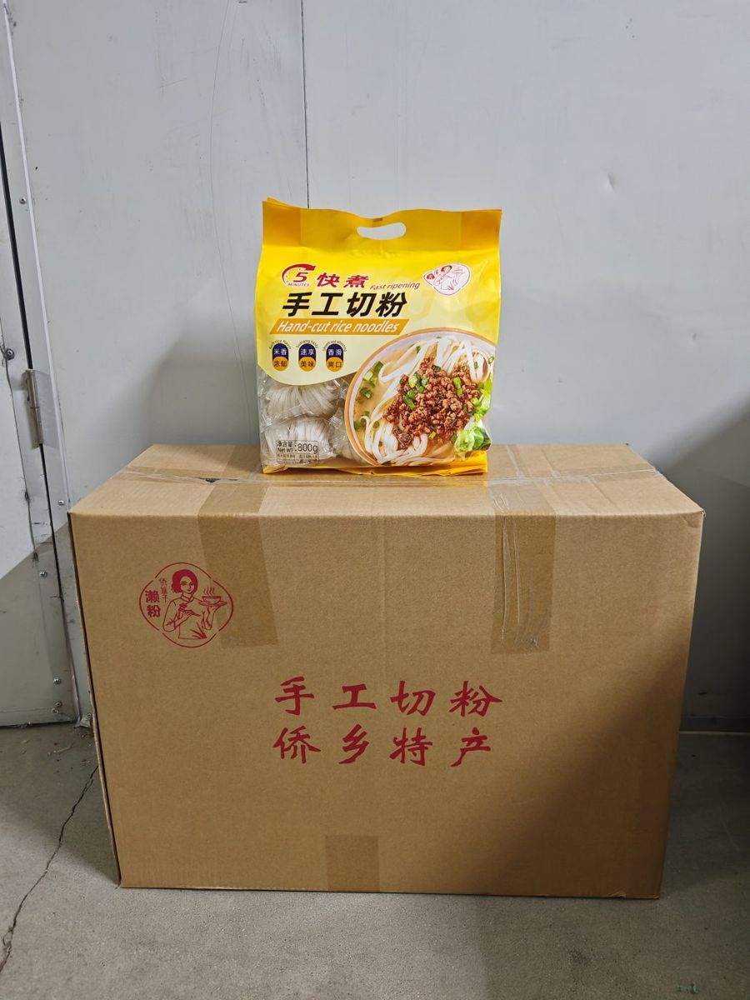
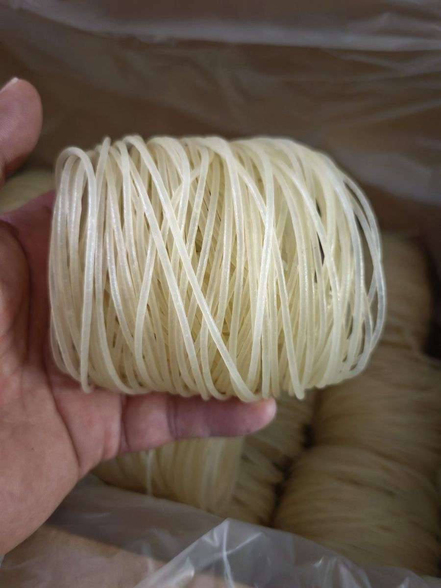
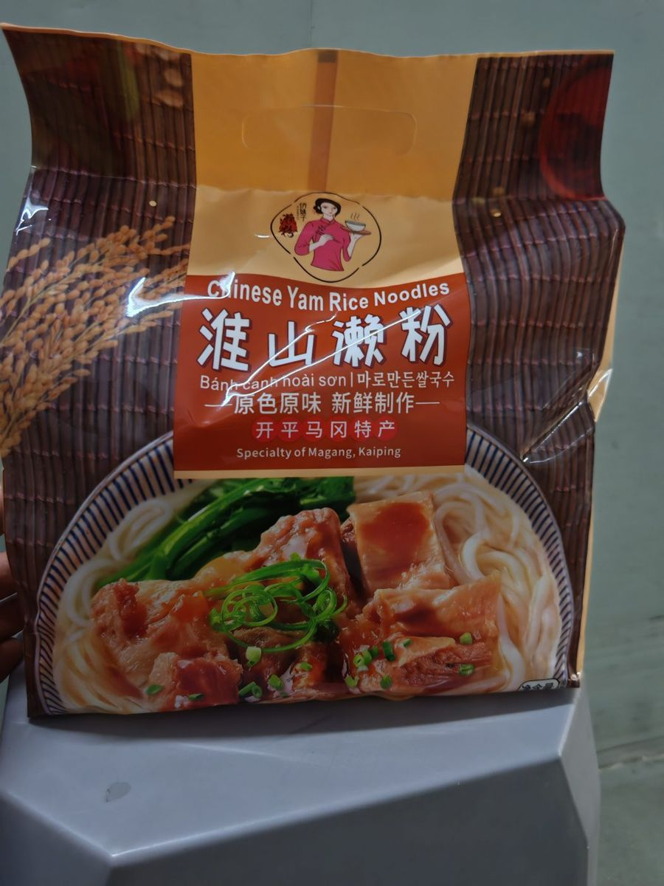
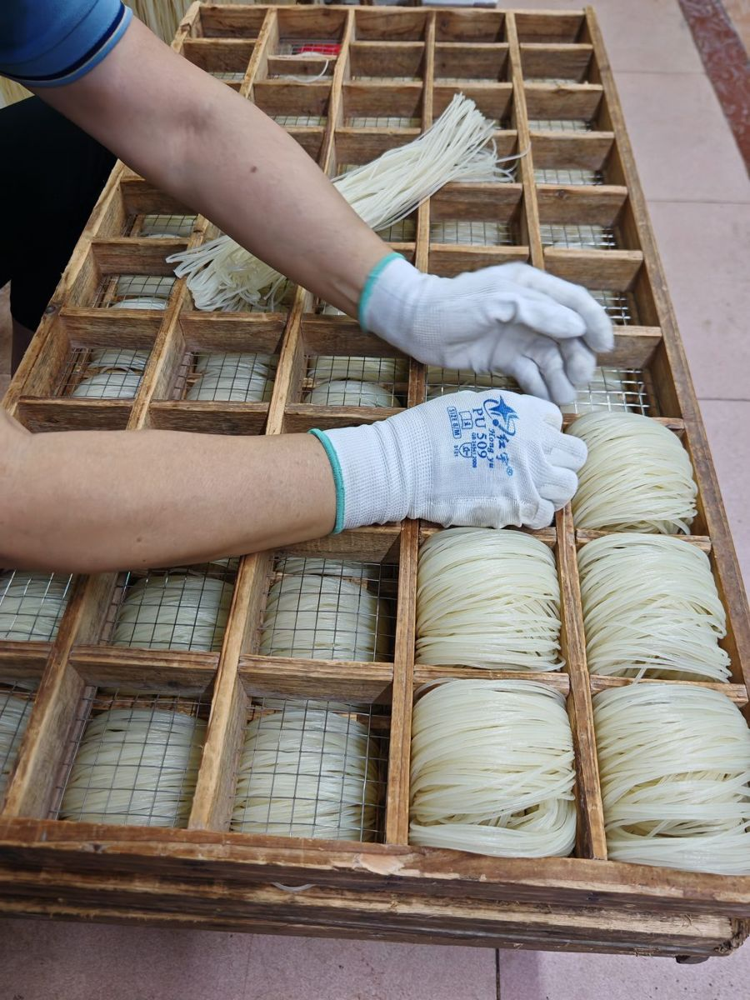
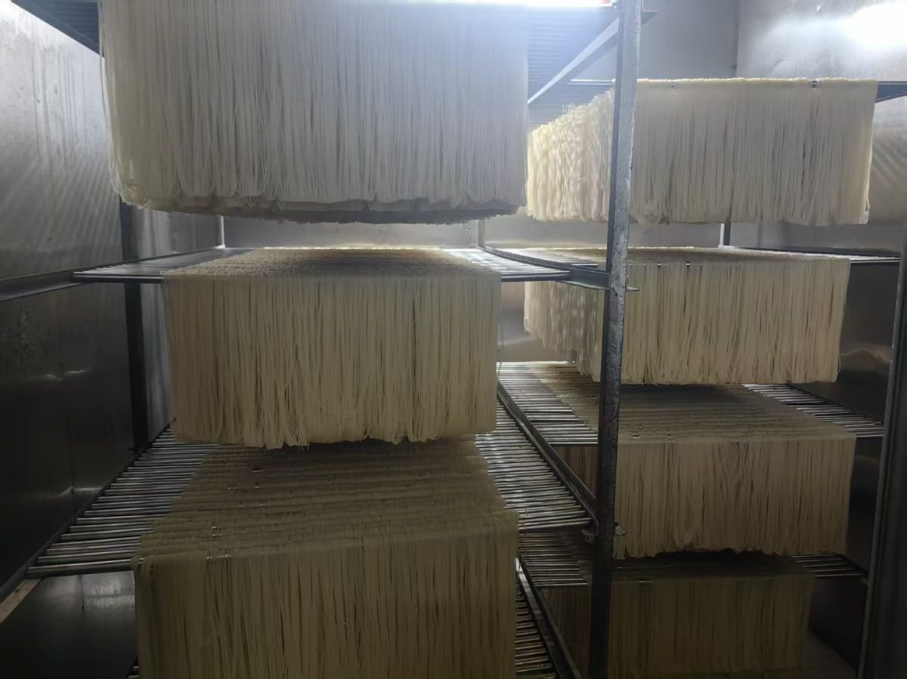
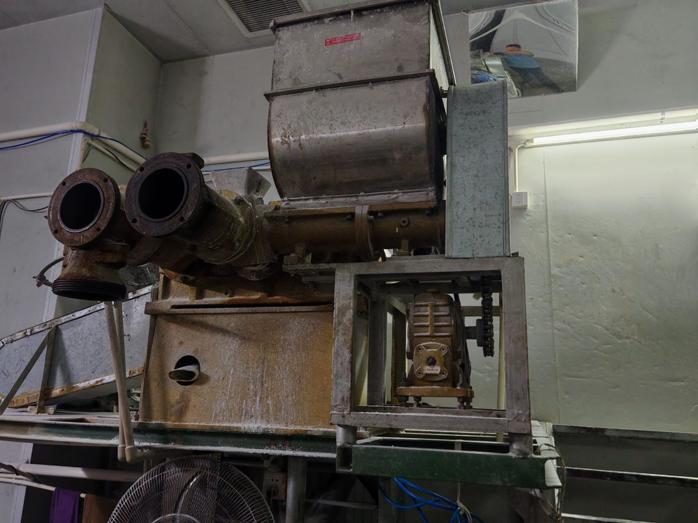
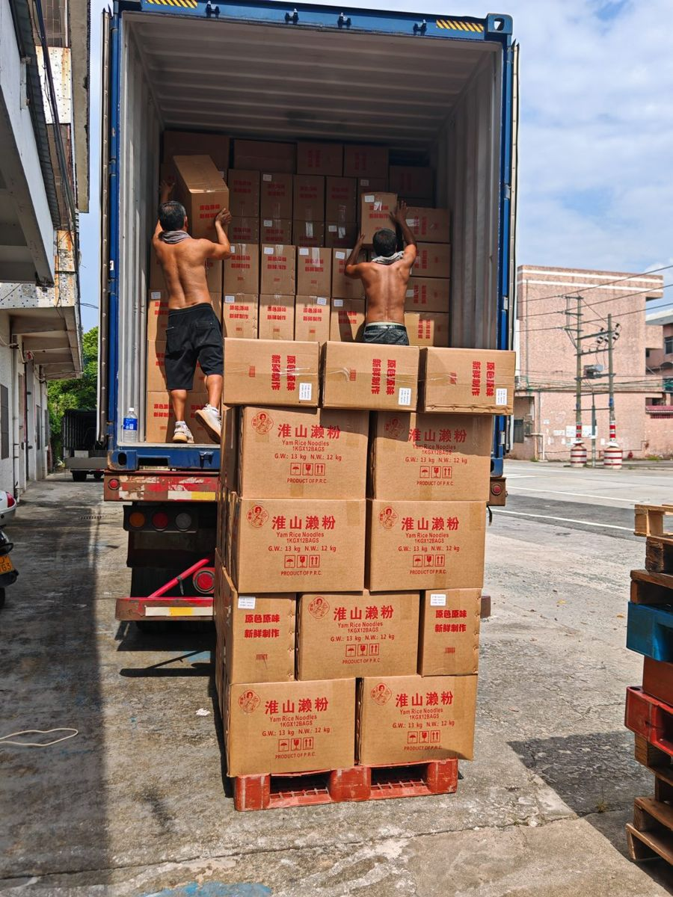

AILAI FOODS is a family-craft noodle workshop turned modern export kitchen — cutting, molding and sun-drying rice noodles the traditional way, at a scale ready for container orders.
Request a Quote See Products

Signature sun-dried noodle nests, 100% rice. Cooks in minutes; chewy, never sticky. 1 kg bags, retail-ready cartons.

With Chinese yam (huai-shan) — our export flagship, already shipped overseas in multilingual retail packs.

Wide-cut style for soups and stir-fry. Custom widths and pack formats on request.



Tell us the product, pack format and quantity you need — we reply within 24 hours with pricing, samples policy and lead time.
sales@ailaifoods.com